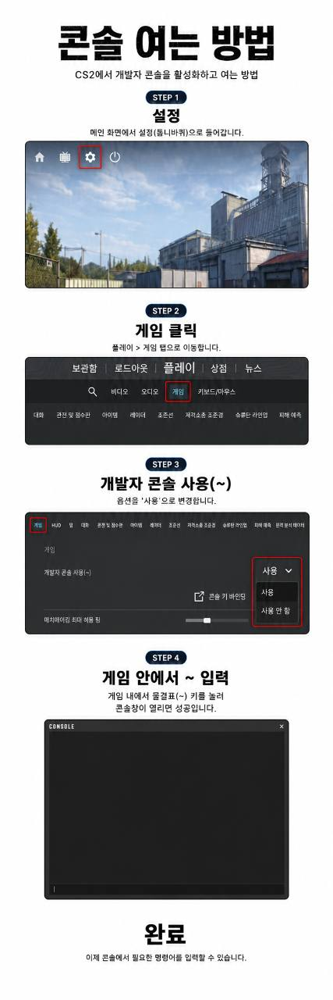

exec menu_bind
를 입력하세요.
bind 1 "slot1; menuselect 1";
bind 2 "slot2; menuselect 2";
bind 3 "slot3; menuselect 3";
bind 4 "slot4; menuselect 4";
bind 5 "slot5; menuselect 5";
bind 6 "slot6; menuselect 6";
bind 7 "slot7; menuselect 7";
bind 8 "slot8; menuselect 8";
bind 9 "slot9; menuselect 9";!stopsound, !hide 300
명령어를 사용해 보세요.
snd_musicvolume (0~2)
콘솔창에 입력
!stopsound
채팅창에 입력

Loading commands...